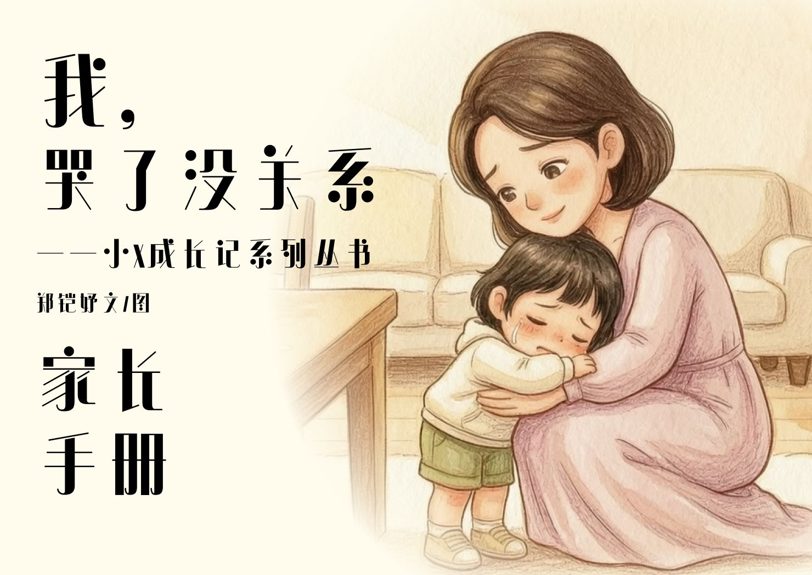

It's Okay That I Cried我，哭了没关系
A therapeutic picture book for children aged 3–6 and the adults who read with them. The protagonist is an ordinary girl, not a star: she cries when she falls, gets upset over a toy, and doesn't want to let go at the kindergarten gate. The book never says “don't cry”. It follows one feeling from the moment it appears to the moment it settles, and lets it be normal. The handbook was written for the second reader — the adult who often doesn't know what to say. 一本写给 3–6 岁孩子的情绪疗愈绘本，也写给他身边一起读的大人。主角并不是什么小明星，只是一个普通的小女孩：摔倒了会哭，抢玩具会委屈，在幼儿园门口舍不得松手。这本书从不说“不许哭”，它只是陪一种情绪从出现、到顶点、再到平息，让“这样很正常”被说出来。家长手册则写给第二位读者——那位常常不知道该怎么开口的大人。